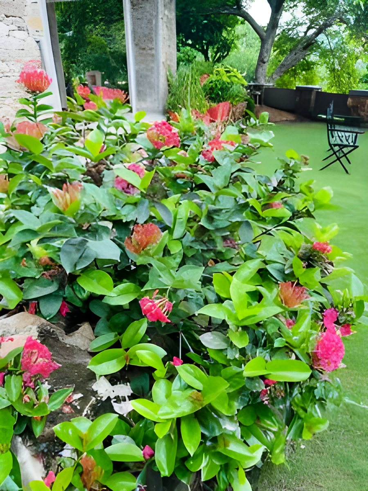
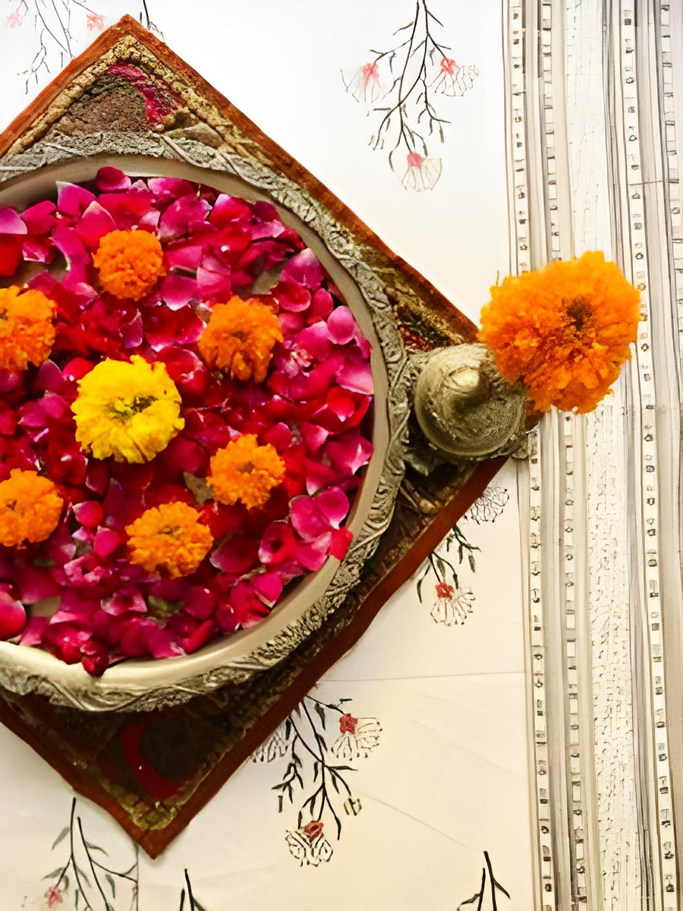

Devra Udaipur
About Devra
A boutique homestay on five green acres, hosted by Major Durga Das and Jyoti Jasol.
About Devra
A tribal temple where God resides
In the local language, Devra means a tribal temple where God resides.
The house sits on a five-acre estate on a small hillock, 10–15 minutes from Udaipur city centre, with farmland all around and 360° views of the Aravalli hills.
- 8 rooms: 6 double, 2 twin
- Infinity pool
- Home-cooked Rajasthani food
- Pet-friendly
- Solar powered


The hosts
Major Durga Das and Jyoti Jasol
Major Durga Das (ex-Indian Army) and his wife Jyoti Jasol live at Devra and look after every guest personally.
Both love animals, join guests on morning farm walks, and Jyoti shares the traditional recipes she grew up with.

How to reach
Close to the city, away from the noise
Devra Udaipur, Sisarma,Bujra Road, Kalarohi,
Udaipur – 313001
Book your stay
Your room on the hillock is waiting
8 rooms, home-cooked food and the Aravalli hills all around.